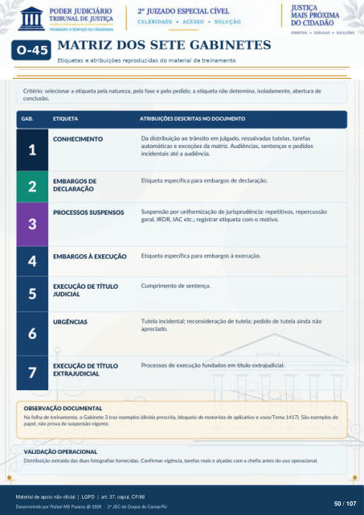

MÓDULO COMPLEMENTAR
MATRIZ DOS SETE GABINETES
Etiquetas e atribuições reproduzidas do material de treinamento Critério: selecionar a etiqueta pela natureza, pela fase e pelo pedido; a etiqueta não determina, isoladamente, abertura de conclusão. GAB.
ETIQUETA
ATRIBUIÇÕES DESCRITAS NO DOCUMENTO
CONHECIMENTO
Da distribuição ao trânsito em julgado, ressalvadas tutelas, tarefas automáticas e exceções da matriz. Audiências, sentenças e pedidos incidentais até a audiência.
EMBARGOS DE
DECLARAÇÃO Etiqueta específica para embargos de declaração.
PROCESSOS SUSPENSOS
Suspensão por uniformização de jurisprudência: repetitivos, repercussão geral, IRDR, IAC etc.; registrar etiqueta com o motivo.
EMBARGOS À EXECUÇÃO
Etiqueta específica para embargos à execução.
EXECUÇÃO DE TÍTULO
JUDICIAL Cumprimento de sentença.
URGÊNCIAS
Tutela incidental; reconsideração de tutela; pedido de tutela ainda não apreciado.
EXECUÇÃO DE TÍTULO
EXTRAJUDICIAL Processos de execução fundados em título extrajudicial.
OBSERVAÇÃO DOCUMENTAL
Na folha de treinamento, o Gabinete 3 traz exemplos (dívida prescrita, bloqueio de motorista de aplicativo e voos/Tema 1417). São exemplos do papel, não prova de suspensão vigente.
VALIDAÇÃO OPERACIONAL
Distribuição extraída das duas fotografias fornecidas. Confirmar vigência, tarefas reais e alçadas com a chefia antes do uso operacional.
Ver também o infográfico original (página 50)
